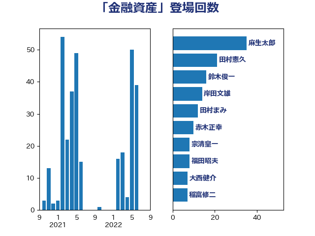

単語「金融資産」

| 麻生太郎 | 自由民主党 | 35 回 |
| 田村憲久 | 自由民主党 | 21 回 |
| 鈴木俊一 | 自由民主党 | 16 回 |
| 岸田文雄 | 自由民主党 | 14 回 |
| 田村まみ | 国民民主党 | 12 回 |
| 赤木正幸 | 日本維新の会 | 10 回 |
| 宗清皇一 | 自由民主党 | 8 回 |
| 福田昭夫 | 立憲民主党 | 8 回 |
| 大西健介 | 立憲民主党 | 7 回 |
| 稲富修二 | 立憲民主党 | 7 回 |
| 前原誠司 | 国民民主党 | 6 回 |
| 沢田良 | 日本維新の会 | 6 回 |
| 坂本哲志 | 自由民主党 | 5 回 |
| 田島麻衣子 | 立憲民主党 | 5 回 |
| 菅義偉 | 自由民主党 | 5 回 |
| 勝部賢志 | 立憲民主党 | 4 回 |
| 神田潤一 | 自由民主党 | 4 回 |
| 倉林明子 | 日本共産党 | 3 回 |
| 和田義明 | 自由民主党 | 3 回 |
| 海江田万里 | 立憲民主党 | 3 回 |
| 田村貴昭 | 日本共産党 | 3 回 |
| 磯崎仁彦 | 自由民主党 | 3 回 |
| 神田憲次 | 自由民主党 | 3 回 |
| 小倉將信 | 自由民主党 | 2 回 |
| 岡本三成 | 公明党 | 2 回 |
| 平井卓也 | 自由民主党 | 2 回 |
| 櫻井周 | 立憲民主党 | 2 回 |
| 江田憲司 | 立憲民主党 | 2 回 |
| 湯原俊二 | 立憲民主党 | 2 回 |
| 金子恭之 | 自由民主党 | 2 回 |
| 階猛 | 立憲民主党 | 2 回 |
| 三浦信祐 | 公明党 | 1 回 |
| 下野六太 | 公明党 | 1 回 |
| 中川正春 | 立憲民主党 | 1 回 |
| 井上貴博 | 自由民主党 | 1 回 |
| 吉田統彦 | 立憲民主党 | 1 回 |
| 塩村あやか | 立憲民主党 | 1 回 |
| 大塚耕平 | 国民民主党 | 1 回 |
| 安江伸夫 | 公明党 | 1 回 |
| 山田太郎 | 自由民主党 | 1 回 |
| 平沢勝栄 | 自由民主党 | 1 回 |
| 武村展英 | 自由民主党 | 1 回 |
| 浜田聡 | NHK党 | 1 回 |
| 牧山ひろえ | 立憲民主党 | 1 回 |
| 田中健 | 国民民主党 | 1 回 |
| 福山哲郎 | 立憲民主党 | 1 回 |
| 舞立昇治 | 自由民主党 | 1 回 |
| 若林健太 | 自由民主党 | 1 回 |
| 萩生田光一 | 自由民主党 | 1 回 |
| 重徳和彦 | 立憲民主党 | 1 回 |
| 長妻昭 | 立憲民主党 | 1 回 |
| 音喜多駿 | 日本維新の会 | 1 回 |